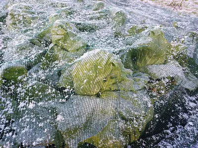
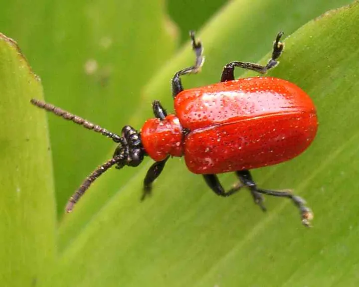

Kleiner Kohlweißling
Pieris rapae
Schädling4–5 cm Spannweitetagaktiv
Beet & GemüseBlüten
Häufigster weißer Falter im Garten. Seine samtgrünen Raupen fressen einzeln und gut getarnt am Kohl. Im Juli und August legt er seine Eier einzeln an Kohl und Kapuzinerkresse.
So erkennst du den Kleinen Kohlweißling
- Weiß mit kleiner grauer Flügelspitze
- Ein bis zwei dunkle Punkte auf dem Vorderflügel
- Raupe samtgrün mit feinem gelbem Rückenstreifen
Auch zu finden unter: Weißer Schmetterling
Wann ist der Kleine Kohlweißling zu sehen?
kaum zu sehenaktivbeste Zeit
Aktiv: März, April, Mai, Juni, Juli, August, September und Oktober. Hauptzeit: Juli und August.
Der Kleine Kohlweißling ist von März bis Oktober zu sehen. Besonders viel los ist im Juli und August. Im Juli und August legt er seine Eier einzeln an Kohl und Kapuzinerkresse.
Typisches Schadbild: Löcher bis ins Herz des Kohls.
Lebensweise
Was frisst der Kleine Kohlweißling?
Die Falter saugen Nektar. Die Raupen fressen an Kohl, Rettich, Rucola und Kapuzinerkresse, oft bis ins Herz des Kohlkopfs.
Mehrere Generationen
Im Jahr fliegen zwei bis vier Generationen. Die letzte überwintert als Puppe.
Gut zu wissen
Schlupfwespen befallen viele Raupen. Ein Teil des Problems regelt sich so von selbst.
Sanft vorbeugen
Ein Kulturschutznetz über den Kohl spannen, Blattunterseiten regelmäßig kontrollieren und Raupen absammeln.
Früh erkennen
Grüne Kotkrümel auf den Blättern verraten die getarnten Raupen.
Passend dazu
- Beispielfoto · Foto: Schlaghecken Josef, CC BY-SA 4.0 – Lizenzangaben im Bildnachweis

Kulturschutznetz
Auswahl bei Amazon
Ein feines Netz über Kohl und Möhren hält Kohlweißling, Kohlfliege und Möhrenfliege ab.
Bei Amazon ansehen Kulturschutznetz (Werbelink, öffnet in neuem Fenster) - Beispielfoto · Foto: Michel Helmecke, CC BY-SA 2.0 de – Lizenzangaben im Bildnachweis
 Unser Tipp
Unser TippBecherlupe mit Vergrößerung
Auswahl bei Amazon
Insekten kurz einfangen, genau ansehen und wieder freilassen. Ideal auch für Kinder.
Bei Amazon ansehen Becherlupe mit Vergrößerung (Werbelink, öffnet in neuem Fenster)
Werbelink: Wenn du über diesen Link etwas kaufst, erhält der Gartentierkompass eine kleine Provision von Amazon. Für dich ändert sich am Preis nichts. Als Amazon-Partner verdiene ich an qualifizierten Verkäufen.
Nicht verwechseln: Großer Kohlweißling
Der Große Kohlweißling hat große schwarze Flügelspitzen und Raupen in Gruppen.
Foto: Uoaei1 (Quelle, öffnet in neuem Fenster), CC BY-SA 4.0 (Lizenztext, öffnet in neuem Fenster), Wikimedia Commons
Großer Kohlweißling oder Kleiner Kohlweißling? Alle Unterschiede · Großer Kohlweißling im Porträt
Mehr erfahren
- Wikipedia: Kleiner Kohlweißling (öffnet in neuem Fenster)
- Beobachtungen bei iNaturalist (öffnet in neuem Fenster)
- Vögel im Garten im Vogelkompass
Von Nico Schober · Stand: 19. November 2026 · Angaben abgeglichen mit Wikipedia und gängiger Bestimmungsliteratur
Oft in der Nähe
-
 tagaktiv
tagaktivGroßer Kohlweißling
SchädlingWeißer Schmetterling mit schwarzen Flügelspitzen, dessen Raupen in Gruppen Kohl kahl fressen.
-

tagaktivLilienhähnchen
SchädlingLeuchtend lackroter Käfer, der mit seinen Larven Lilien und Kaiserkronen zerfrisst.
-
 tagaktiv
tagaktivSchwarze Bohnenlaus
SchädlingMattschwarze Blattlaus, die im Frühsommer dichte Kolonien an Bohnen, Mohn und Dahlien bildet.
-
 tagaktiv
tagaktivGartenlaubkäfer
SchädlingKleiner Käfer mit grün glänzendem Halsschild, der im Juni schwärmt. Seine Engerlinge fressen Rasenwurzeln.